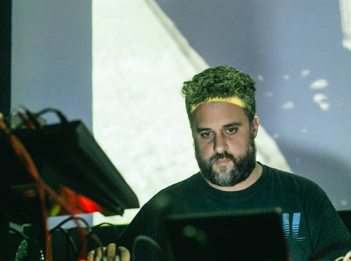
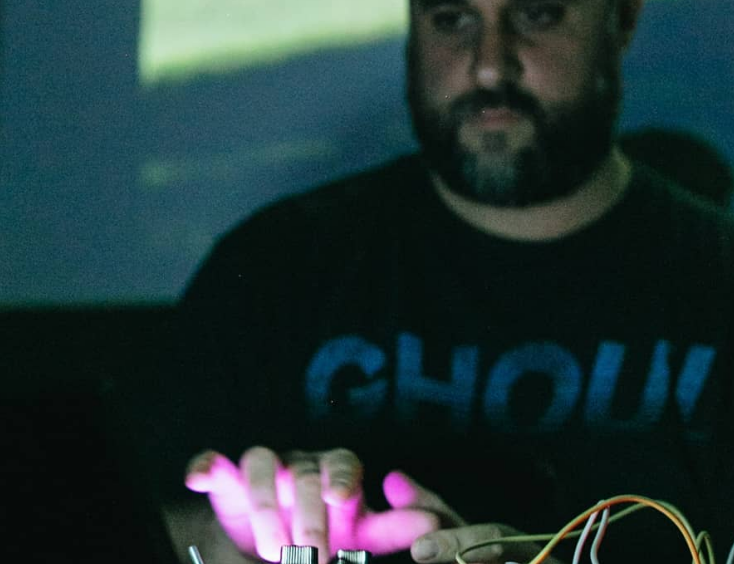
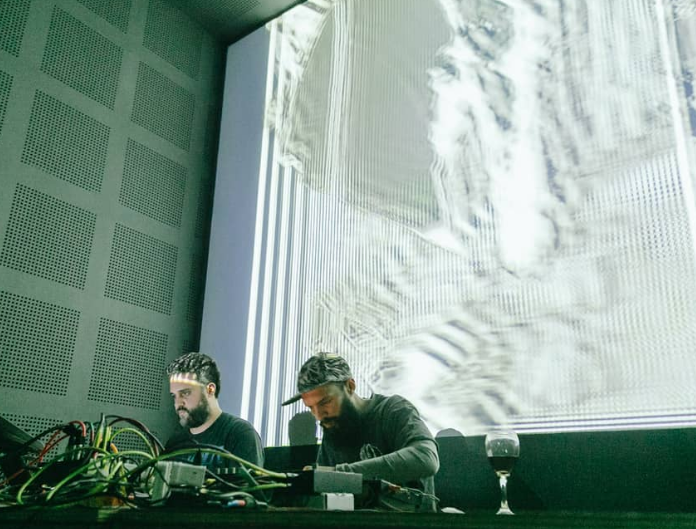

Javier Plano nació en Buenos Aires (Argentina), en 1979. Es Licenciado en Artes Electrónicas de la Universidad Nacional de Tres de Febrero. También cursó algunos años de Ingeniería en Informática. Ha realizado talleres de creación audiovisual con Hernán Khourián y Gustavo Galuppo, entre otros. Participó del programa beca “Interactivos” de la Fundación Telefónica. En 2007 comienza a producir trabajos en video e instalaciones, con los que participa en diversos festivales y muestras organizadas por instituciones del ámbito local y el exterior. Fue Asistente de dirección y encargado de la coordinación técnica de la primera Bienal de la Imagen en Movimiento, el Productor a cargo de la coordinación técnica en las ediciones de 2014 y 2016.


